Front
1. Remove steering knuckle as described under Steering and Suspension / Steering / Steering Knuckle / Service and Repair. Service and RepairFront Suspension
CAUTION:
^ Replace the self-locking nuts after removal.
^ Replace the self-locking bolts if you can easily thread a nut past their nylon locking inserts.
NOTE: Wipe off the grease before tightening the nut at the ball joint.
CAUTION: The vehicle should be on the ground before any bolts or nuts connected to rubber mounts or bushings are tightened. SRS wire harness is routed near the front suspension. All SRS wire harness and connectors are colored yellow. Do not use electrical test equipment on these circuit
CAUTION: Be careful not to damage SRS wire harness when servicing the front suspension
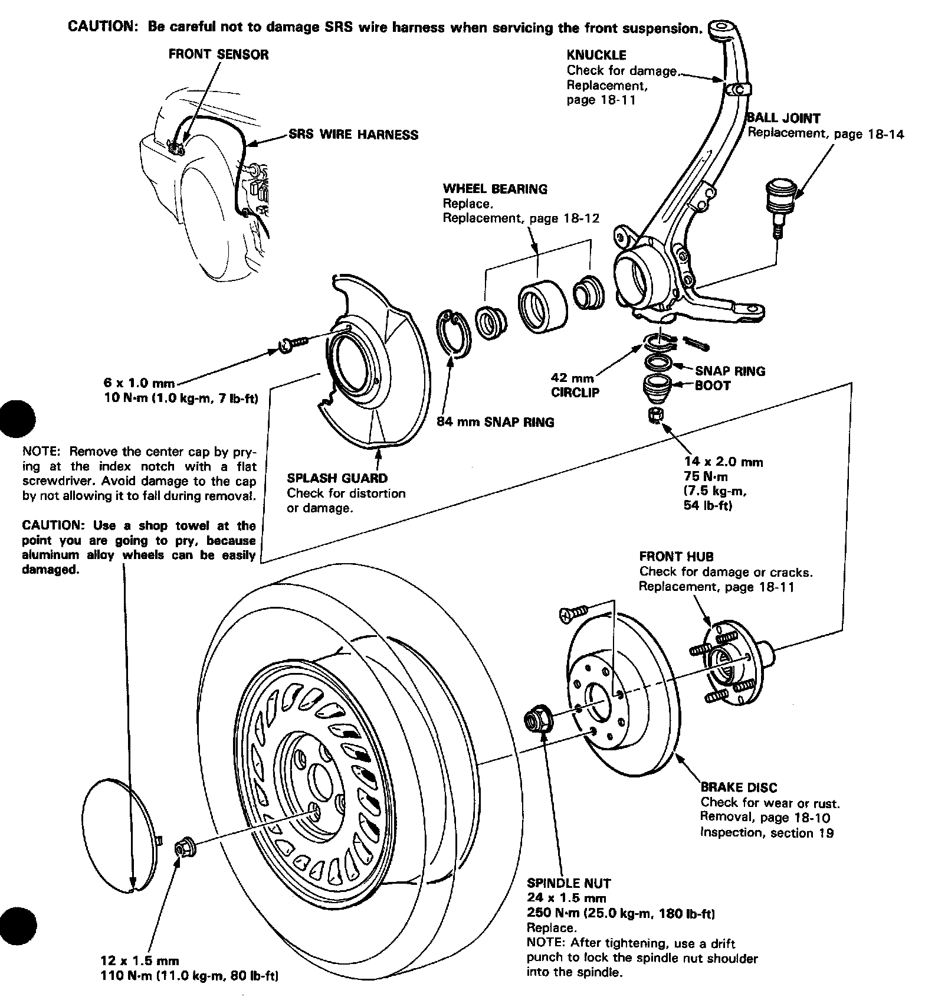
Removal
Pry the spindle nut lock tab away from the spindle, then loosen the nut using a 36 mm socket.
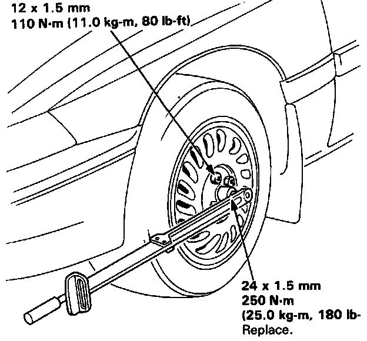
2. Loosen the lug nuts slightly.
3. Raise the front of car and support it with safety stands in proper locations.
4. Remove the lug nuts, wheel and spindle nut.
5. Remove the caliper mounting bolts and hang the caliper assembly to one side.
CAUTION: To prevent accidental damage to the caliper assembly or brake hose, use a short piece of wire to hang the caliper assembly from the undercarriage.
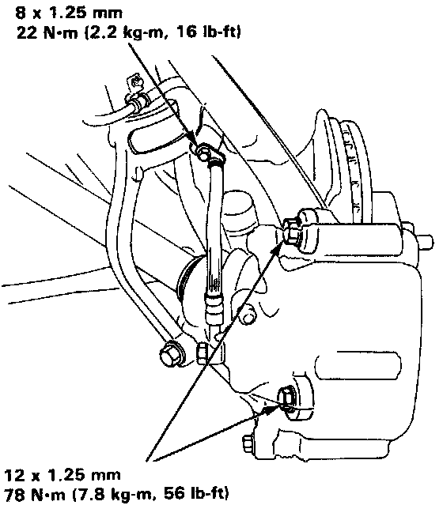
6. Remove the 6 mm brake disc retaining screws.
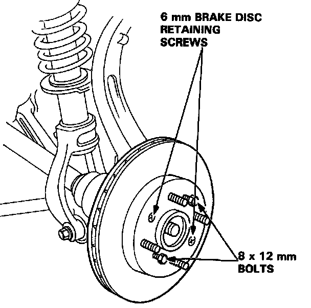
7. Screw two 8 x 12 mm bolts into the disc to push it away from the hub.
NOTE: Turn each bolt two turns at a time to prevent cocking disc excessively.
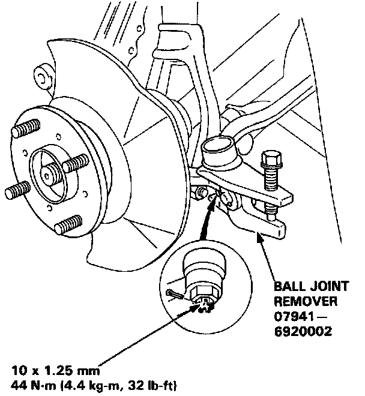
Remove the cotter pin from the tie-rod end and remove the castle nut.
9. Break loose the tie-rod ball joint using the special tool, then lift the tie-rod out of the knuckle.
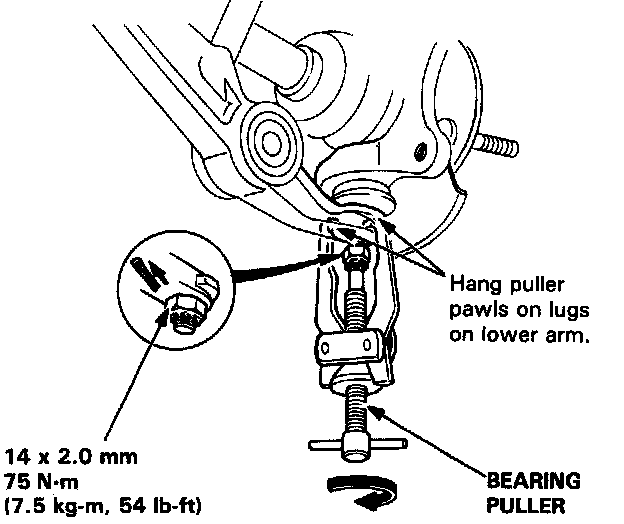
10. Pry the cotter pin off and loosen the lower arm ball joint nut half the length of the joint threads.
11. Separate the ball joint and lower arm using a puller with the pawls applied to the lower arm.
CAUTION: Avoid damaging the ball joint boot
NOTE: If necessary, apply penetrating type lubricant to loosen the ball joint.
12. Pry off the cotter pin and remove the upper arm ball joint nut.
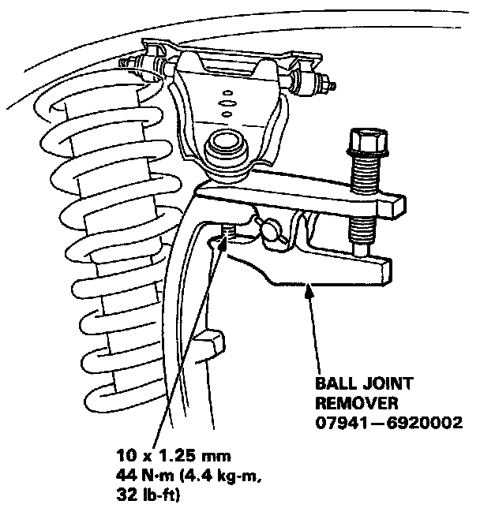
13. Separate the upper ball joint and knuckle using the Special tool.
14. Remove the knuckle and hub by sliding them off the driveshaft.
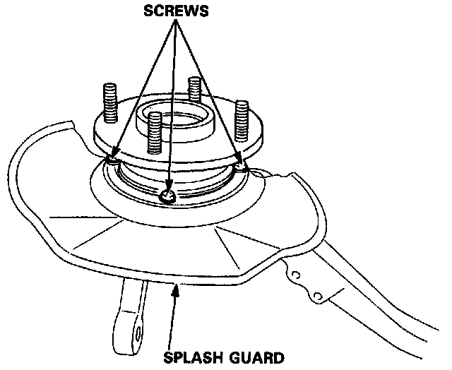
15. Remove the splash guard screws from the knuckle.
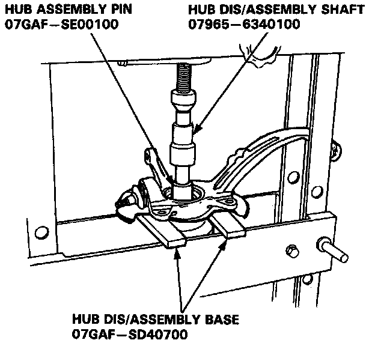
16. Separate the hub from the knuckle using a hydraulic press and the special tools shown below.
CAUTION:
^ Take care not to distort the splash guard.
^ Hold onto the hub to keep it from falling when pressed clear.
NOTE: Replace the bearing with a new one after removal
1. Remove the 84 mm snap ring from the knuckle.
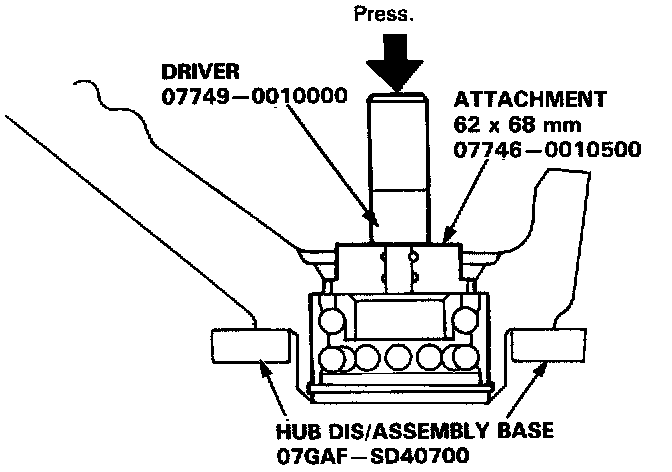
2. Press the wheel bearing out of the knuckle using a hydraulic press and the special tools shown.
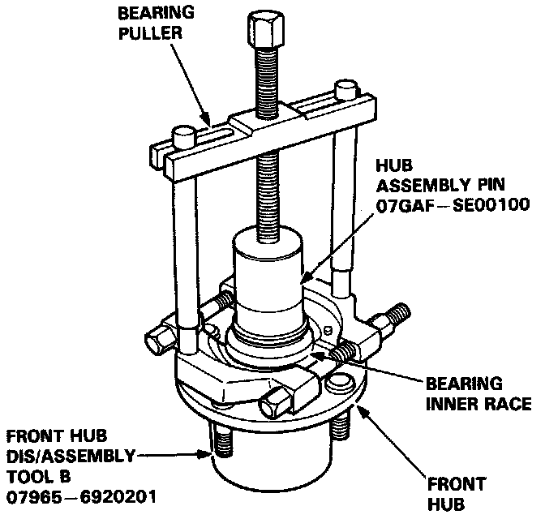
3. Remove the outboard bearing inner race from the hub using a bearing puller and the special tools shown.
NOTE: Wash the knuckle and hub thoroughly before reassembly.
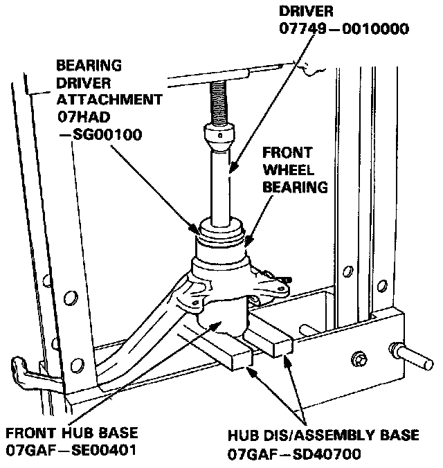
. Press a new wheel bearing into the hub using a hydraulic press and the special tools shown.
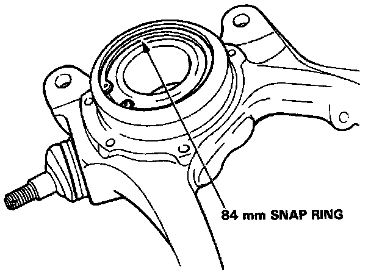
2. Install the 84 mm snap ring securely in the knuckle groove.
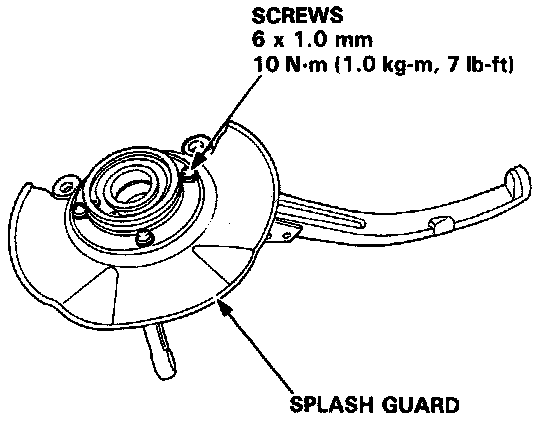
3. Install the splash guard and tighten the screws.
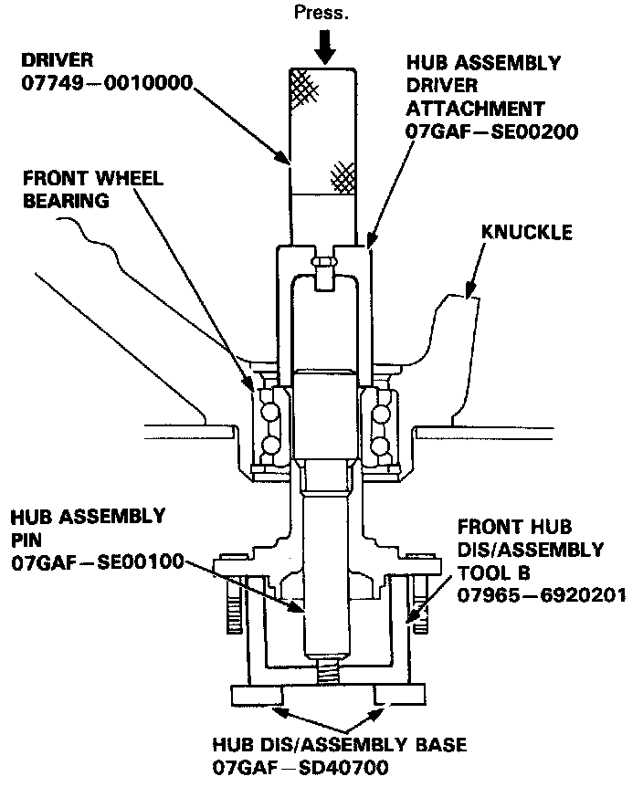
4. Place the front hub in the special tool fixture, then set the knuckle in position and apply downward pressure with a hydraulic press.
CAUTION: Maximum press load: 4 tons